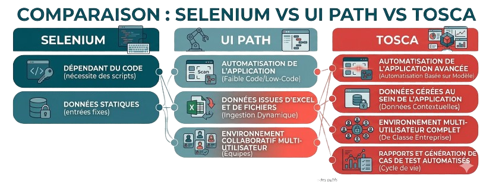
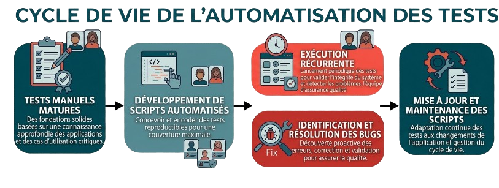

Qualité et conformité à chaque étape du cycle data
Éliminez le travail manuel répétitif et responsabilisez votre équipe avec des scripts qui :

Collaboration étroite pour une expertise certifiée
Des années d'expérience pratique sur le terrain
Solution de confiance pour les entreprises mondiales
Une solution premium pour vos besoins complexes
Responsabilise testeurs et utilisateurs métier
Connexion fluide avec vos pipelines de livraison
Adapté aux environnements d'entreprise complexes
Support, formation et communauté active
